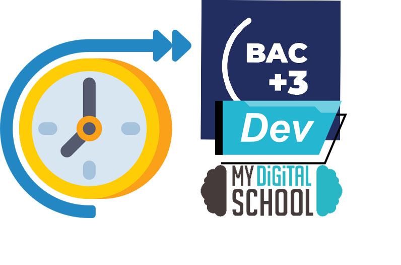

Portfolio
Qui je suis, d’où je viens, pourquoi j’ai choisi le BTS SIO SLAM, et mes objectifs professionnels.
Présentation des langages, outils, systèmes et concepts vus en cours (PHP, Python, MySQL, VMware, DHCP, cybersécurité, etc.).
Mise en place de machine virtuel pour certains TP vu en cours
Mise en place d'un DHCP
Mise en place d'un GLPI
Mise en place d'un gestionnaire de base de données
Présentation d’un projet clé : application en Python avec base SQLite, gestion des tickets, tests, sauvegardes et déploiement local.
Présentation du logiciel de ticketing coté utilisateur.
Présentation du logiciel de ticketing coté technicien.
Utilisation de Dbeaver pour la gestion des données.
Systeme d'authentification pour augmenter la securité.
Systeme de role pour gestion de droit different.
Gestion des taches avec un tableau des tickets.
Explication des tests réalisés : manuels, automatisés avec PHPUnit, et importance de la fiabilité avant déploiement.
Outils utilisés (Google Alerts, Feeder), sujets suivis comme l’informatique quantique, et intérêt professionnel de cette veille.
Google alerts utilisé comme principal outils de veille technologique
Flux Rss avec l'extension Feeder utilisé comme second outils de veille technologique
Derniere nouveauté lié au ordinateur quantique
Présentation de mon portfolio en ligne et de mon profil LinkedIn, dans une logique de développement professionnel et de visibilité.
Application HTML/CSS avec base de données développée en stage, mise en œuvre du CRUD et découverte de Flutter.
Participation à un vrai projet de l’entreprise : application Flutter/Tailwind pour créer des votes publics/privés, intégration fonctionnelle.
Participation à un vrai projet de l’entreprise : application Flutter/Tailwind/firebase pour créer des votes publics/privés, intégration fonctionnelle.

Résumé des compétences acquises, de ton évolution pro et technique, et ouverture vers mes futurs projets.